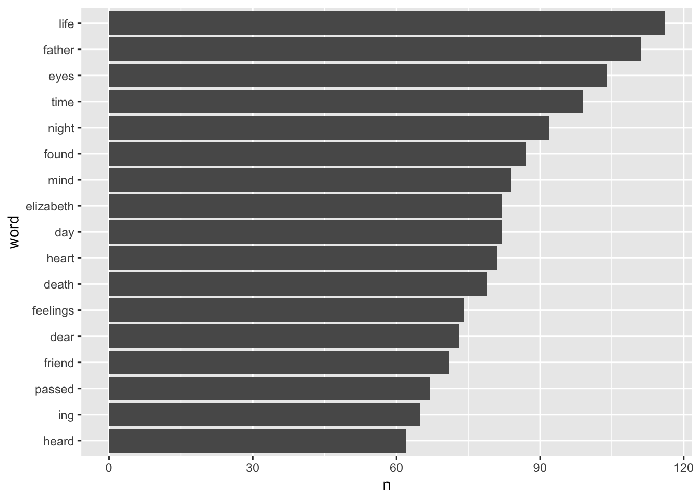
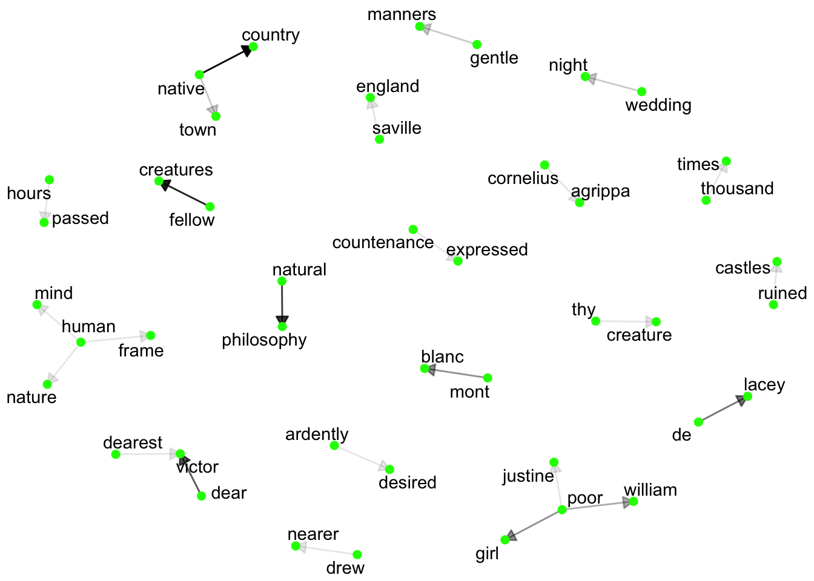

Text data cannot be processed identically to numerical or categorical data. Is there a way then to analyze text data and obtain insight from it??
Of course! All it takes is an adapted approach and a little more work upfront.
Quite a bit of potential data is unstructured and textual in nature.To extract the underlying value of this category of data, different techniques are required.
In this post we will focus on some routine methods for text mining and text analysis in R and how they can be utilized to process and draw value from unstructured text data.
In R, the first stop is the stringr package. This package can be loaded on its own, or as part of tidyverse.
The functions contained within process character strings in various ways. Luckily for us, R has a cheatsheet for the package.
It should be noted that there is also the stringi package which contains more robust functions for handling strings. For simplicity, we will only be concentrating on stringr in this post.
library(stringr)
library(tidyverse)To illustrate the use of text manipulation in R, we will be analyzing a pdf of Mary Shelley’s Frankenstein (downloaded from planetbook.com). We will use the pdftools package to extract the text from the pdf file.
library(pdftools)
book <- pdf_text("frankenstein.pdf")pdf_text converts the pdf file into a character string where each element is a page from the document.
Now that we have defined the book as a character string we will begin to mold it into a data frame so it is easier to work with.
book_df <- book %>%
as_tibble_col("content") %>%
rowid_to_column("page_number")
book_df## # A tibble: 277 x 2
## page_number content
## <int> <chr>
## 1 1 "Frankenstein\nBy Mary Wollstonecraft Shelley\nDownload free eBo…
## 2 2 "Letter 1\nTo Mrs. Saville, England\n St. Petersburgh, Dec. 11…
## 3 3 "and features may be without example, as the phenomena of\nthe h…
## 4 4 "North Pacific Ocean through the seas which surround the\npole. …
## 5 5 "practical advantage. Twice I actually hired myself as an un-\nd…
## 6 6 "easily be done by paying the insurance for the owner, and\nto e…
## 7 7 "Letter 2\nTo Mrs. Saville, England\n Archangel, 28th March, 1…
## 8 8 "to me that I am self-educated: for the first fourteen years\nof…
## 9 9 "remarkable in the ship for his gentleness and the mildness of\n…
## 10 10 "himself bound in honour to my friend, who, when he found\nthe f…
## # … with 267 more rowsThis gives a data frame where each row is an observation containing the page number and content held on that page. Now we can begin in earnest with the text mining.
str_detect is used to detect which observations match a patternstr_which is used to pick out the index’s of the entries of all matchesstr_extract is used to pull out the first pattern match within each element
stringr also have a _all functionality, such as str_extract_all, which returns all matches within an observationHere is a look at these three function in practice. To illustrate the use of these functions, we will search for all pages that reference “Frankenstein”.
book_df$content %>%
str_detect("Frankenstein")## [1] TRUE TRUE FALSE TRUE FALSE TRUE FALSE TRUE FALSE TRUE FALSE TRUE
## [13] FALSE TRUE FALSE TRUE FALSE TRUE FALSE TRUE FALSE TRUE FALSE TRUE
## [25] FALSE TRUE FALSE TRUE FALSE TRUE FALSE TRUE FALSE TRUE FALSE TRUE
## [37] FALSE TRUE FALSE TRUE FALSE TRUE FALSE TRUE FALSE TRUE FALSE TRUE
## [49] FALSE TRUE FALSE TRUE FALSE TRUE FALSE TRUE FALSE TRUE FALSE TRUE
## [61] TRUE TRUE FALSE TRUE FALSE TRUE FALSE TRUE FALSE TRUE FALSE TRUE
## [73] TRUE TRUE FALSE TRUE FALSE TRUE TRUE TRUE FALSE TRUE FALSE TRUE
## [85] FALSE TRUE FALSE TRUE FALSE TRUE FALSE TRUE FALSE TRUE FALSE TRUE
## [97] FALSE TRUE FALSE TRUE FALSE TRUE FALSE TRUE FALSE TRUE FALSE TRUE
## [109] FALSE TRUE FALSE TRUE FALSE TRUE TRUE TRUE FALSE TRUE FALSE TRUE
## [121] FALSE TRUE FALSE TRUE FALSE TRUE FALSE TRUE FALSE TRUE FALSE TRUE
## [133] FALSE TRUE FALSE TRUE FALSE TRUE FALSE TRUE FALSE TRUE FALSE TRUE
## [145] FALSE TRUE FALSE TRUE FALSE TRUE FALSE TRUE FALSE TRUE FALSE TRUE
## [157] FALSE TRUE FALSE TRUE FALSE TRUE FALSE TRUE FALSE TRUE FALSE TRUE
## [169] FALSE TRUE TRUE TRUE FALSE TRUE FALSE TRUE FALSE TRUE FALSE TRUE
## [181] FALSE TRUE FALSE TRUE FALSE TRUE FALSE TRUE FALSE TRUE FALSE TRUE
## [193] FALSE TRUE FALSE TRUE FALSE TRUE FALSE TRUE FALSE TRUE FALSE TRUE
## [205] FALSE TRUE FALSE TRUE FALSE TRUE FALSE TRUE FALSE TRUE FALSE TRUE
## [217] FALSE TRUE FALSE TRUE FALSE TRUE FALSE TRUE FALSE TRUE FALSE TRUE
## [229] FALSE TRUE FALSE TRUE FALSE TRUE FALSE TRUE FALSE TRUE FALSE TRUE
## [241] FALSE TRUE FALSE TRUE FALSE TRUE FALSE TRUE FALSE TRUE FALSE TRUE
## [253] FALSE TRUE FALSE TRUE FALSE TRUE FALSE TRUE FALSE TRUE FALSE TRUE
## [265] TRUE TRUE FALSE TRUE FALSE TRUE TRUE TRUE TRUE TRUE FALSE TRUE
## [277] FALSEbook_df$content %>%
str_detect("Frankenstein") %>%
sum()## [1] 147book_df$content %>%
str_detect("Frankenstein") %>%
mean()## [1] 0.5306859Adding on the sum and mean functions we are also able to see the number and percentage of pages which contain the “Frankenstein” text pattern.
Next, str_which gives us the locations of the pages containing the pattern.
ind_capitals <- book_df$content %>%
str_which("Frankenstein")
ind_capitals## [1] 1 2 4 6 8 10 12 14 16 18 20 22 24 26 28 30 32 34
## [19] 36 38 40 42 44 46 48 50 52 54 56 58 60 61 62 64 66 68
## [37] 70 72 73 74 76 78 79 80 82 84 86 88 90 92 94 96 98 100
## [55] 102 104 106 108 110 112 114 115 116 118 120 122 124 126 128 130 132 134
## [73] 136 138 140 142 144 146 148 150 152 154 156 158 160 162 164 166 168 170
## [91] 171 172 174 176 178 180 182 184 186 188 190 192 194 196 198 200 202 204
## [109] 206 208 210 212 214 216 218 220 222 224 226 228 230 232 234 236 238 240
## [127] 242 244 246 248 250 252 254 256 258 260 262 264 265 266 268 270 271 272
## [145] 273 274 276Lastly, str_extract pulls the pattern from each of the pages. However, str_extract will return a vector as the same length as the input. In order to filter to only entries that have the pattern match, we will combine it with str_which.
book_df$content[ind_capitals] %>%
str_extract("Frankenstein")## [1] "Frankenstein" "Frankenstein" "Frankenstein" "Frankenstein" "Frankenstein"
## [6] "Frankenstein" "Frankenstein" "Frankenstein" "Frankenstein" "Frankenstein"
## [11] "Frankenstein" "Frankenstein" "Frankenstein" "Frankenstein" "Frankenstein"
## [16] "Frankenstein" "Frankenstein" "Frankenstein" "Frankenstein" "Frankenstein"
## [21] "Frankenstein" "Frankenstein" "Frankenstein" "Frankenstein" "Frankenstein"
## [26] "Frankenstein" "Frankenstein" "Frankenstein" "Frankenstein" "Frankenstein"
## [31] "Frankenstein" "Frankenstein" "Frankenstein" "Frankenstein" "Frankenstein"
## [36] "Frankenstein" "Frankenstein" "Frankenstein" "Frankenstein" "Frankenstein"
## [41] "Frankenstein" "Frankenstein" "Frankenstein" "Frankenstein" "Frankenstein"
## [46] "Frankenstein" "Frankenstein" "Frankenstein" "Frankenstein" "Frankenstein"
## [51] "Frankenstein" "Frankenstein" "Frankenstein" "Frankenstein" "Frankenstein"
## [56] "Frankenstein" "Frankenstein" "Frankenstein" "Frankenstein" "Frankenstein"
## [61] "Frankenstein" "Frankenstein" "Frankenstein" "Frankenstein" "Frankenstein"
## [66] "Frankenstein" "Frankenstein" "Frankenstein" "Frankenstein" "Frankenstein"
## [71] "Frankenstein" "Frankenstein" "Frankenstein" "Frankenstein" "Frankenstein"
## [76] "Frankenstein" "Frankenstein" "Frankenstein" "Frankenstein" "Frankenstein"
## [81] "Frankenstein" "Frankenstein" "Frankenstein" "Frankenstein" "Frankenstein"
## [86] "Frankenstein" "Frankenstein" "Frankenstein" "Frankenstein" "Frankenstein"
## [91] "Frankenstein" "Frankenstein" "Frankenstein" "Frankenstein" "Frankenstein"
## [96] "Frankenstein" "Frankenstein" "Frankenstein" "Frankenstein" "Frankenstein"
## [101] "Frankenstein" "Frankenstein" "Frankenstein" "Frankenstein" "Frankenstein"
## [106] "Frankenstein" "Frankenstein" "Frankenstein" "Frankenstein" "Frankenstein"
## [111] "Frankenstein" "Frankenstein" "Frankenstein" "Frankenstein" "Frankenstein"
## [116] "Frankenstein" "Frankenstein" "Frankenstein" "Frankenstein" "Frankenstein"
## [121] "Frankenstein" "Frankenstein" "Frankenstein" "Frankenstein" "Frankenstein"
## [126] "Frankenstein" "Frankenstein" "Frankenstein" "Frankenstein" "Frankenstein"
## [131] "Frankenstein" "Frankenstein" "Frankenstein" "Frankenstein" "Frankenstein"
## [136] "Frankenstein" "Frankenstein" "Frankenstein" "Frankenstein" "Frankenstein"
## [141] "Frankenstein" "Frankenstein" "Frankenstein" "Frankenstein" "Frankenstein"
## [146] "Frankenstein" "Frankenstein"Some other characters to take note of: ^ is used to search for matches at the start of a string, $ is used to search for matches at the end of a string, . is used to match any character that is not a new line, [:upper:] is used to match upper case words, * is used to pull 0 or more matches, and + is used to pull 1 or more matches.
The text data is now in a data frame, but is still far from orderly. Perusing through a few pages reveals that the footer at the bottom of each page is either the page number (which we already have) and the title of the book (Frankenstein), or the page number and the website home of the pdf.
Neither of these are useful to us. Let’s use str_remove to remove these from the pages.
book_df$content <- book_df$content %>%
str_remove("\\n(\\d+|\\030)\\s+Frankenstein\n$|\\n\\s*Free eBooks at Planet eBook.com\\s+(\\d+|\\\030)\\n$")\\n is used to detect new lines\\d is used to detect digits\\s is used to detect and spaces\\\ is used to detect a back slash| is used as an or statement to detect multiple patternsNow our strings contain only the most relevant information, but they are still dense and difficult to decipher insight from.
The next step is to use the tidytext package to further break up the data. Using the unnest_token function it is possible to breakdown character strings into lines, paragraphs, sentences, words, and n-grams. First we will update the data frame by breaking the strings down by line.
library(tidytext)
book_df <- book_df %>%
unnest_tokens("lines", content, token = "lines", to_lower = F)
book_df## # A tibble: 7,578 x 2
## page_number lines
## <int> <chr>
## 1 1 "Frankenstein"
## 2 1 "By Mary Wollstonecraft Shelley"
## 3 1 "Download free eBooks of classic literature, books and"
## 4 1 "novels at Planet eBook. Subscribe to our free eBooks blog"
## 5 1 "and email newsletter."
## 6 2 "Letter 1"
## 7 2 "To Mrs. Saville, England"
## 8 2 " St. Petersburgh, Dec. 11th, 17—"
## 9 2 " You will rejoice to hear that no disaster has accompanied"
## 10 2 "the commencement of an enterprise which you have regard-"
## # … with 7,568 more rowsNow that we have the text broken up into lines it is much easier to process. Next let’s add more identifying variables where each line can be identified by line number and the chapter.
Frankenstein begins with several letters before it gets into the chapters. To identify which pages fall under letters or chapters we need to do a little preliminary work with the tools demonstrated so far.
ind_chapter <- book_df$lines %>%
str_which("^Chapter") %>%
append(nrow(book_df))
chapters <- book_df$lines[ind_chapter[-length(ind_chapter)]] %>%
str_extract("^Chapter.*") %>%
unlist()
ind_letter <- book_df$lines %>%
str_which("^Letter") %>%
append(ind_chapter[1])
letters <- book_df$lines[ind_letter[-length(ind_letter)]] %>%
str_extract_all("^Letter.*") %>%
unlist()Now that we have our indexes and values we can create new columns to further classify each observation.
book_df <- book_df %>%
mutate(
line_number = row_number(),
chapter = "fill in"
)
book_df$chapter[c(1:(ind_letter[1] - 1))] <- "Preface"
for (i in 1:(length(ind_letter) - 1)){
book_df$chapter[c(ind_letter[i]:(ind_letter[i + 1] -1))] <- letters[i]
}
for (i in 1:(length(ind_chapter) - 1)){
book_df$chapter[c(ind_chapter[i]:(ind_chapter[i + 1] -1))] <- chapters[i]
}
book_df <- book_df %>%
select(chapter, page_number, line_number, lines)mutate was used to add the new columns to the data frame and then for loops were used to set the values of the chapter column using the indexes and values that were established.
What began as a pdf of unstructured text is now a structured data frame with clear variables and observations. Going forward this will be much easier to work with.
Now that we have a structured data frame, lets look for the most common words that appear within the text.
book_words <- book_df %>%
unnest_tokens(word, lines, token = "words")
book_words %>%
count(word, sort = T)## # A tibble: 7,895 x 2
## word n
## <chr> <int>
## 1 the 4192
## 2 and 2977
## 3 i 2851
## 4 of 2649
## 5 to 2108
## 6 my 1780
## 7 a 1392
## 8 in 1155
## 9 was 1021
## 10 that 1017
## # … with 7,885 more rowsThe most common words are unsurprisingly the filler words found in any text. To sort these words out we will use the stop_words data frame, which is a list of these common words.
book_words <- book_words %>%
anti_join(stop_words) ## Joining, by = "word"book_words %>%
count(word, sort = T)## # A tibble: 7,396 x 2
## word n
## <chr> <int>
## 1 life 116
## 2 father 111
## 3 eyes 104
## 4 time 99
## 5 night 92
## 6 found 87
## 7 mind 84
## 8 day 82
## 9 elizabeth 82
## 10 heart 81
## # … with 7,386 more rowsNow that we have this count, it would be nice to have a visualization of the most common words. Let’s do that now using ggplot.
book_words %>%
count(word, sort = T) %>%
filter(n > 60) %>%
mutate(word = reorder(word, n)) %>%
ggplot() +
geom_col(aes(n, word))
It is also useful to count combinations of words. tidytext gives this option using ngrams.
book_df %>%
unnest_tokens(bigram, lines, token = "ngrams", n = 2) %>%
count(bigram, sort= T) # again the most common word pairings belong to the stop_words subset, we can still filter these out though## # A tibble: 39,255 x 2
## bigram n
## <chr> <int>
## 1 of the 491
## 2 of my 254
## 3 in the 250
## 4 i was 219
## 5 i had 210
## 6 that i 194
## 7 and i 190
## 8 to the 180
## 9 and the 179
## 10 on the 144
## # … with 39,245 more rowsbigrams <- book_df %>%
unnest_tokens(bigram, lines, token = "ngrams", n = 2)
bigrams_sep <- bigrams %>%
separate(bigram, c("word1", "word2"), sep = " ")
bigrams_filter <- bigrams_sep %>%
filter(!word1 %in% stop_words$word) %>%
filter(!word2 %in% stop_words$word)
bigrams_count <- bigrams_filter %>%
count(word1, word2, sort = T) %>%
na.omit()
bigrams_count## # A tibble: 4,813 x 3
## word1 word2 n
## <chr> <chr> <int>
## 1 native country 12
## 2 fellow creatures 11
## 3 natural philosophy 10
## 4 dear victor 9
## 5 de lacey 8
## 6 mont blanc 7
## 7 poor girl 7
## 8 poor william 6
## 9 gentle manners 5
## 10 native town 5
## # … with 4,803 more rowsThis same technique can be applied to any number of word groupings by setting the value of n.
We are also able to produce a nice visualization of these groupings using a word network.
library(grid)
library(igraph)## Warning: package 'igraph' was built under R version 3.6.2##
## Attaching package: 'igraph'## The following objects are masked from 'package:dplyr':
##
## as_data_frame, groups, union## The following objects are masked from 'package:purrr':
##
## compose, simplify## The following object is masked from 'package:tidyr':
##
## crossing## The following object is masked from 'package:tibble':
##
## as_data_frame## The following objects are masked from 'package:stats':
##
## decompose, spectrum## The following object is masked from 'package:base':
##
## unionlibrary(ggraph)## Warning: package 'ggraph' was built under R version 3.6.2set.seed(1)
bigrams_count %>%
filter(n > 3) %>%
graph_from_data_frame() %>%
ggraph(layout = "fr") +
geom_edge_link(show.legend = F,
arrow = arrow(type = "closed", length = unit(0.1, "inches")),
aes(edge_alpha = n)) +
geom_node_point(color = "green", size = 2) +
geom_node_text(aes(label = name), repel = T) +
theme_void()
In the above visualization arrows point from the first word to the second. The shading option (edge_alpha) included in the code makes an arrow darker the more times the word combination appears. We also added a filter that only allows word combinations which have more than 3 occurrences to appear in the network.
The last technique illustrated in this post concerns the frequency of text appearances within data. Word counts have there uses, but the number of appearances of a word or a grouping of words is not the best metric for how important those elements are to the overall data source.
tf stands for term frequency and represents how often are chosen element (word, bigram, trigram, sentence, etc) appears in a document.
idf stands for inverse document frequency and represents how unique an element is in a data set. It is calculated by the following formula:
\[idf(\text{element}) = ln(\frac{n_{\text{documents}}}{n_{\text{documents containing term}}})\]